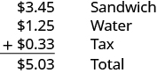
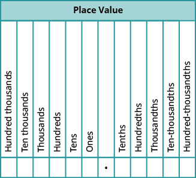
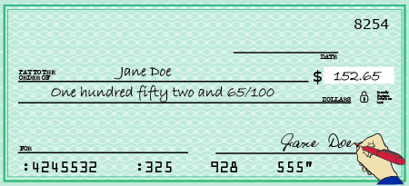

দশমিক সংখ্যা পড়া
উৎস-অনুগত উপবিভাগ · m81293-fs-id2200477। সম্পূর্ণ বইয়ের অনুবাদ এখনও চলছে। গাণিতিক চিহ্ন, সংখ্যা ও মূল কাঠামো অক্ষুণ্ণ; প্রযোজ্য ক্ষেত্রে সূত্রের শব্দলেবেল বাংলায় অনূদিত। মূল ছবির ভিতরের ইংরেজি লেবেলের অর্থ বাংলা বিবরণে আছে। স্বাধীন শিক্ষক ও ভাষা-পর্যালোচনা বাকি। অন্য উপবিভাগের উৎস-লিঙ্কে ইন্টারনেট প্রয়োজন।
দশমিক সংখ্যা পড়া
টাকা-পয়সা ব্যবহার করার অভিজ্ঞতা থেকে দশমিক সংখ্যা সম্পর্কে তুমি হয়তো কিছুটা জানো। ধরা যাক, দুপুরের খাবারের জন্য একটি স্যান্ডউইচ ও এক বোতল জল কিনলে। এখানে মূল বইয়ের মার্কিন ডলার ও সেন্টের উদাহরণ রাখা হয়েছে; $ চিহ্নটি ডলার বোঝায়। স্যান্ডউইচের দাম জলের বোতলের দাম এবং মোট বিক্রয়কর হলে দুপুরের খাবারের জন্য মোট কত খরচ হবে?

উল্লম্ব যোগে প্রথম সারিতে স্যান্ডউইচের দাম $3.45, অর্থাৎ 3 ডলার 45 সেন্ট; দ্বিতীয় সারিতে জলের দাম $1.25, অর্থাৎ 1 ডলার 25 সেন্ট; তৃতীয় সারিতে কর $0.33, অর্থাৎ 33 সেন্ট। যোগফল $5.03, অর্থাৎ 5 ডলার 3 সেন্ট। দশমিক বিন্দুগুলি একই সরলরেখায় আছে।
মোট খরচ ধরা যাক, তুমি -এর একটি নোট ও টি পেনি দিলে। পেনি হল এক সেন্ট মূল্যের মুদ্রা। তোমাকে কি ফেরত পাওয়ার জন্য অপেক্ষা করতে হবে? না, ও টি পেনির মোট মূল্যও
যেহেতু তাই প্রত্যেক পেনির মূল্য এক ডলারের অংশ—এই ভগ্নাংশের লব 1 ও হর 100। এক পেনির মূল্য লিখি কারণ
দশমিক বিন্দু ব্যবহার করে সংখ্যা লেখাকে দশমিক রূপে লেখা বলে। এখানে সসীম দশমিক নিয়ে কাজ করছি—অর্থাৎ দশমিক বিন্দুর পরে অঙ্কের সংখ্যা সসীম। সমগ্রকে 10, 100, 1000 ইত্যাদি সমান ভাগে ভাগ করলে সেই ভাগগুলি দশমিক রূপে প্রকাশ করা যায়। অর্থাৎ, হর দশের কোনও ঘাত এমন ভগ্নাংশ লেখার আর-একটি উপায় হল সসীম দশমিক। গণনার সংখ্যার স্থানীয় মান যেমন দশের ঘাতের উপর নির্ভর করে, দশমিকের স্থানীয় মানও তেমন। সারণি [fs-id1383547]-এ গণনার সংখ্যাগুলি দেখো।
| গণনার সংখ্যা | কথায় পড়া |
| এক | |
| দশ | |
| একশো | |
| এক হাজার | |
| দশ হাজার |
দশমিকের সঙ্গে ভগ্নাংশের সম্পর্ক কী? সারণি [fs-id2474612]-এ সেই সম্পর্ক দেখানো হয়েছে।
| দশমিক রূপ | ভগ্নাংশ | কথায় পড়া |
| এক দশাংশ | ||
| এক শতাংশ—এখানে একশো সমান ভাগের এক ভাগ | ||
| এক সহস্রাংশ | ||
| দশ হাজার ভাগের এক ভাগ |
অঋণাত্মক পূর্ণসংখ্যা পড়ার সময় দশের ঘাতভিত্তিক স্থানীয় মান অনুযায়ী তার নাম বলি। অঋণাত্মক পূর্ণসংখ্যা অংশে আমরা -কে দশ হাজার বলে পড়তে শিখেছি। তেমনই দশমিকের ঘরগুলির নাম তাদের ভগ্নাংশ-এর মানের সঙ্গে মেলে। চিত্র [CNX_BMath_Figure_05_01_002]-এর স্থানীয় মানের নামগুলি কীভাবে সারণি [fs-id2474612]-এর ভগ্নাংশগুলির নামের সঙ্গে সম্পর্কিত, লক্ষ করো।

স্থানীয় মানের ছকে দশমিক বিন্দুসহ 12টি স্তম্ভ। বাঁ থেকে ডানে: লক্ষের ঘর, দশ হাজারের ঘর, হাজারের ঘর, শতকের ঘর, দশকের ঘর, এককের ঘর, দশমিক বিন্দু, দশাংশের ঘর, শতাংশের ঘর, সহস্রাংশের ঘর, দশ হাজার ভাগের এক ভাগের ঘর এবং এক লক্ষ ভাগের এক ভাগের ঘর। দশমিকের ডান দিকে প্রথম পাঁচ ঘরের এক-একটি এককের মান যথাক্রমে লব 1 ও হর 10, 100, 1000, 10000 ও 100000-এর ভগ্নাংশ। এখানে শতাংশ বলতে একশো সমান ভাগের এক ভাগ বোঝায়; এটি শতকরা হার নিয়ে আলাদা কোনও আলোচনা নয়।
চিত্র [CNX_BMath_Figure_05_01_002]-এ দুটি গুরুত্বপূর্ণ বিষয় লক্ষ করো।
- ইংরেজি মূলের ভগ্নাংশের স্থাননামগুলির শেষে ‘থ’ ধ্বনি থাকে। সংখ্যার নাম ও ভগ্নাংশের নাম গুলিয়ে ফেলো না: এক হাজার হল 1-এর চেয়ে বড়ো সংখ্যা, কিন্তু এক সহস্রাংশ হল 1-এর চেয়ে ছোটো ভগ্নাংশ, যার লব 1 ও হর 1000।
- দশাংশের ঘর দশমিক বিন্দুর ডান দিকের প্রথম ঘর; কিন্তু দশকের ঘর দশমিক বিন্দুর বাঁ দিকের দ্বিতীয় ঘর। বাঁ দিকে প্রথমে এককের ঘর থাকে।
দুপুরের খাবারের খরচের কথা মনে আছে? -কে আমরা পড়ি পাঁচ ডলার ও তিন সেন্ট। টাকা-পয়সা ছাড়া অন্য দশমিক সংখ্যাও স্থানীয় মান ধরে পড়া যায়। যেমন -কে স্থানীয় মান ধরে পড়ি পাঁচ ও তিন শতাংশ। বাংলায় সাধারণভাবে অঙ্ক ধরে পড়লে বলি ‘পাঁচ দশমিক শূন্য তিন’। দশমিক বিন্দুর ডান দিকের প্রতিটি অঙ্ক আলাদা করে বলো; শূন্য বাদ দিও না। নীচে মূল বইয়ের স্থানীয় মান ধরে পড়ার পদ্ধতিটিও দেখানো হয়েছে—এটি একই মান বোঝানোর আর-একটি উপায়।
কখনও দশমিক রূপ-এ লেখা সংখ্যাকে কথায় লিখতে হয়। চিত্র [CNX_BMath_Figure_05_01_003]-এ দেখানো চেকের মতো, চেকের টাকার পরিমাণ অঙ্কে ও কথায় দুইভাবেই লেখা হয়।

জেন ডো-র নামে লেখা একটি নমুনা চেক। অঙ্কে টাকার পরিমাণ $152.65, অর্থাৎ 152 ডলার 65 সেন্ট। ইংরেজি কথার অংশের অর্থ: একশো বাহান্ন ও লব 65, হর 100-এর ভগ্নাংশ পরিমাণ ডলার। এই 65/100 ডলারই 65 সেন্ট। অঙ্কে ও কথায় লেখা মূল্য একই। মূল ছবির প্রাপকের নাম, স্বাক্ষর, নম্বর ও অন্য মুদ্রিত অংশ অপরিবর্তিত।
| 15.68 সংখ্যাটিকে স্থানীয় মান ধরে পড়ার চেষ্টা করি। | |
| প্রথমে দশমিক বিন্দুর বাঁ দিকের সংখ্যাটি পড়ি। | পনেরো______ |
| স্থানীয় মানের এই বিকল্প পাঠে দশমিক বিন্দুর জায়গায় ‘ও’ বলি। সাধারণ অঙ্কভিত্তিক বাংলা পাঠে এখানে ‘দশমিক’ বলি। | পনেরো ও_____ |
| এরপর দশমিক বিন্দুর ডান দিকের অঙ্কগুলি একসঙ্গে একটি অঋণাত্মক পূর্ণসংখ্যার মতো পড়ি। | পনেরো ও আটষট্টি_____ |
| শেষ অঙ্কটি যে ঘরে আছে, সেই স্থানীয় মানের নাম বলি। | পনেরো ও আটষট্টি শতাংশ |
-কে স্থানীয় মান ধরে পড়ি পনেরো ও আটষট্টি শতাংশ। অঙ্ক ধরে সাধারণ বাংলা পাঠ হল ‘পনেরো দশমিক ছয় আট’।
অনুশীলন · এই প্রশ্নের লিঙ্ক
প্রতিটি দশমিক সংখ্যা কথায় পড়ো; স্থানীয় মান ধরেও তার অর্থ বোঝাও: ⓐ ⓑ ⓒ ⓓ
সমাধান
| ⓐ | |
| 4.3 | |
| দশমিক বিন্দুর বাঁ দিকের সংখ্যাটি পড়ো। | চার_____ |
| স্থানীয় মানের এই পাঠে দশমিক বিন্দুর জন্য ‘ও’ লেখো। | চার ও_____ |
| দশমিক বিন্দুর ডান দিকের অঙ্কগুলি একসঙ্গে একটি অঋণাত্মক পূর্ণসংখ্যার মতো পড়ো। | চার ও তিন_____ |
| শেষ অঙ্কের স্থানীয় মানের নাম বলো। | চার ও তিন দশাংশ; সাধারণ পাঠ: চার দশমিক তিন। |
| ⓑ | |
| 2.45 | |
| দশমিক বিন্দুর বাঁ দিকের সংখ্যাটি পড়ো। | দুই_____ |
| স্থানীয় মানের এই পাঠে দশমিক বিন্দুর জন্য ‘ও’ লেখো। | দুই ও_____ |
| দশমিক বিন্দুর ডান দিকের অঙ্কগুলি একসঙ্গে একটি অঋণাত্মক পূর্ণসংখ্যার মতো পড়ো। | দুই ও পঁয়তাল্লিশ_____ |
| শেষ অঙ্কের স্থানীয় মানের নাম বলো। | দুই ও পঁয়তাল্লিশ শতাংশ; সাধারণ পাঠ: দুই দশমিক চার পাঁচ। |
| ⓒ | |
| 0.009 | |
| দশমিক বিন্দুর বাঁ দিকের সংখ্যাটি পড়ো। | বাঁ দিকে শূন্য আছে। স্থানীয় মানের সংক্ষিপ্ত পাঠে সেটি বলা হয় না; তবে অঙ্ক ধরে সাধারণ বাংলা পাঠে ‘শূন্য দশমিক শূন্য শূন্য নয়’ বলতে হবে। |
| দশমিক বিন্দুর ডান দিকের অঙ্কগুলি একসঙ্গে একটি অঋণাত্মক পূর্ণসংখ্যার মতো পড়ো। | নয়_____ |
| শেষ অঙ্কের স্থানীয় মানের নাম বলো। | নয় সহস্রাংশ; অর্থাৎ লব 9, হর 1000-এর ভগ্নাংশ। |
| ⓓ | |
| দশমিক বিন্দুর বাঁ দিকের সংখ্যাটি পড়ো। | ঋণাত্মক পনেরো |
| স্থানীয় মানের এই পাঠে দশমিক বিন্দুর জন্য ‘ও’ লেখো। | ঋণাত্মক পনেরো ও_____ |
| দশমিক বিন্দুর ডান দিকের অঙ্কগুলি একসঙ্গে একটি অঋণাত্মক পূর্ণসংখ্যার মতো পড়ো। | ঋণাত্মক পনেরো ও পাঁচশো একাত্তর_____ |
| শেষ অঙ্কের স্থানীয় মানের নাম বলো। | ঋণাত্মক পনেরো দশমিক পাঁচ সাত এক; স্থানীয় মানে পনেরো ও পাঁচশো একাত্তর সহস্রাংশের যোগফলের বিপরীত সংখ্যা। ঋণচিহ্নটি পুরো মানের উপর প্রযোজ্য। |